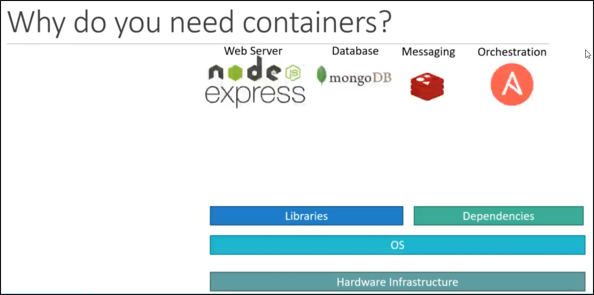

Cosa è Kubernetes (o k8s)?
Pronuncia: Kubernetis
E' un Container Orchestrator, creato inizialmente dalla Google,
poi spostatosi su un'altra casa.
Per comprendere Kubernetes, dobbiamo prima comprendere
due elementi fondamentali:
Container + Orchestration
Containers
Prima domanda: perché abbiamo bisogno dei containers?
Facciamo un esempio con un insieme di tecnologie da unire per un progetto,
come Node Express, MongoDB, Redis ed Ansible.

Che problemi sorgono in generale?
In primis: queste tecnologie devono essere TUTTE compatibili
con il Sistema Operativo che vogliamo usare.
Nel peggiore dei casi, devi affidarti a sistemi più vecchi o aggiornare
quelli che già hai.
In secondo punto:
dobbiamo controllare le dipendenze sul Sistema Operativo
e le Librerie necessarie a questi strumenti per far funzionare
tutte le tecnologie.
Ad esempio: un tool può aver necessità di una versione di una libreria,
un altro potrebbe necessitare di una versione successiva o precedente
di quella libreria!
Terzo punto:
possiamo aver necessità di aggiornare gli strumenti,
come MongoDB oppure Node Express.
Quando succede, dobbiamo controllare OGNI VOLTA se
vi sono problemi con OS, Librerie o Dipendenze.
Tutto questo macello crea una situazione chiamata
"The Matrix from Hell!"

Inoltre, quando vi sono nuovi developer,
sorgono problemi di tutti i tipi:
OS differenti, tempi di setup grandi
e differenti dipendenze/compatibilità

Con un primo approccio, è possibile usare usare Docker:
con Docker è possibile runnare ogni componente,
con le proprie dipendenze e librerie necessarie,
tutte sulla stessa Virtual Machine ed OS
ma con i container separati.
Basta configurare una volta Docker e tutti gli altri developer
possono usare Docker per ottenere la stessa configurazione.

Ora la domanda: cosa sono i Container?
I container sono ambienti completamente isolati.
Possono avere degli elementi propri ciascuno, come:- Processi
- Servizi
- Interfacce di rete
- Mount points
Proprio come delle macchine virtuali!
L'unica cosa in comune è lo stesso kernel di sistema operativo.

I container non sono un qualcosa di nuovo per Docker.
I container in Docker esistono da più di 10 anni,
come quelli:- LXC (LinuX Container)
- LXD (LinuX container Daemon)
- LXCFS (LinuX Container FUSE filesystem)
Docker usa container LXC.
Settare l'enviroment dei container LXC è difficile,
essendo molto a low-level.
Per questo, Docker offre dei tool ad high-level,
con molte powerful functions, al fine di rendere
l'operazione più semplice.
Sistemi Operativi
Per capire come funziona Docker,
ripassiamo delle basi dei sistemi operativi.
Nell'esempio di questi sistemi Linux
(Ubuntu, Fedora, OpenSUSE, CentOS)
consistono tutti di 2 elementi:
Un Kernel è responsabile della gestione degli elementi hardware
sottostanti, ed è comune a tutti questi sistemi operativi nel nostro caso
(essendo basati tutti e 4 su Linux Kernel)
Quello che rende questi sistemi operativi differenti è il Software
presente al layer sovrastante.
Software differenti potrebbero essere:- User Interface
- Drivers
- Compilers
- File Managers
- Dev Tools etc.

I container di Docker, come già detto, condividono lo stesso Kernel.
NB: Vedi l'immagine con Node Express, MongoDB, Redis e Ansible.
Supponiamo di aver installato Docker su una macchina con Ubuntu.
Docker può runnare sopra diversi OS, a patto che girino sullo
lo stesso Kernel (nel caso precedente: Linux).
Esempio: Se il sistema operativo sul quale si basa Docker è Ubuntu,
Docker può runnare un container basato su un'altra distribuzione come
Fedora, OpenSUSE, Debian o CentOS.
Ogni container in Docker ha solo il software addizionale.
NB: Non puoi runnare un SO differente come Windows di conseguenza,
se non ha lo stesso kernel di base (quadrante rosso)

Quindi: non è uno svantaggio di Docker non poter runnare altri sistemi?
La risposta è: no.
Docker non è come Hyper-V, non nasce per virtualizzare e runnare
sistemi operativi differenti sullo stesso hardware.
L'obiettivo di Docker è:- Creare container per le applicazioni
- Runnare applicazioni in un container
- Shippare le applicazioni ad altre persone
Differenza tra Containers e Virtual Machines
Dal lato Docker abbiamo:- Prima hardware
- Poi l'OS
- Docker installato sull'OS
- Da qui, Docker gestisce i container con applicazioni, librerie e dipendenze
Nel caso delle VMs abbiamo:- Prima l'hardware
- Poi l'OS
- Un HyperVisor (come VMWare ESX)
- Le Virtual Machine gestiste hanno applicazioni, librerie, dipendenze ed un OS proprio
Per queste differenze, le VM generalmente utilizzano più risorse
e bootano in modo più lento.
Inoltre, più risorse vi sono e meno isolamento vi sarà tra i
container di Docker.
D'altro canto, le VM possono essere tranquillamente indipendenti.

Come funziona Docker?
Molte applicazioni hanno la propria versione disponibile
come container da utilizzare su Docker.
Queste applicazioni sono pubblicate su un registro pubblico
Docker chiamato "Docker Hub" oppure "Docker Store"
Esempio: Puoi trovare le immagini di sistemi operativi, database
ed applicativi utili. Una volta fatto ciò, installa Docker
sulla tua macchina (attenzione al kernel!)
Successivamente basta runnare il comando "docker run"
con il nome dell'applicazione e creerà un container con l'applicazione
da noi scelta.
Puoi runnare più instanze dello stesso applicativo! (e.g. NodeJS)
NB: è consigliabile avere un load-balancer, in modo che se un container dello stack di NodeJS
crasha o va distrutto, semplicemente il load-balancer lo sostituisce con
un'altra instanza. Vi sono altre soluzioni ma verranno spiegate later.

Differenza tra Container vs Image
Una Docker Image:
E' un package o un template (come quello per le VM)
Viene usato per creare containers a partire da una base utile.

Vantaggio di Docker
Prima: un developer doveva consegnare l'intero progetto,
con guida e tutte le dipendenze ed accortenze necessarie.

Ora: Il developer unisce l'applicativo con la configuration, creando una "Docker Image".
Ora il cliente necessita solo di Docker per poterla scaricare ed eseguire!